זהר להט (הלוכדת הירוקה): התמונות והסרטונים שבאתר, למעט אלה שמופיעים להלן, שייכים לזהר להט.
תמונות מ־Wikimedia Commons: התמונות הבאות מורשות ברישיונות חופשיים (Creative Commons). כל אחת מופיעה בצד שם הצלם, קישור לדף המקור וקישור לרישיון. הרישיון חל על התמונה ועל כל גרסה שלה, כולל ההקטנות והחיתוכים שבאתר, ואין בו כדי לשנות את הרישיון של שאר האתר.
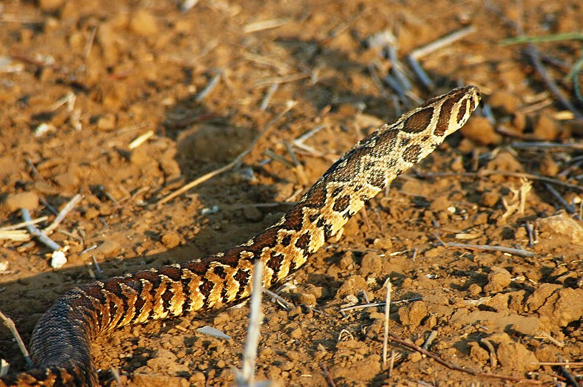
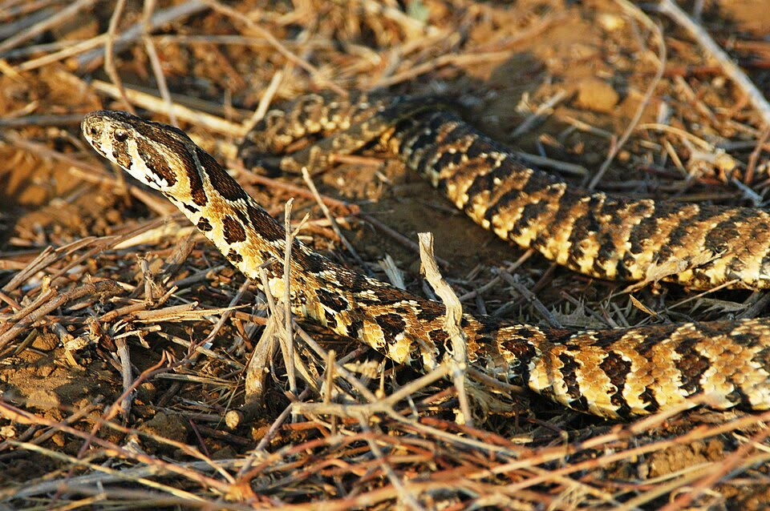
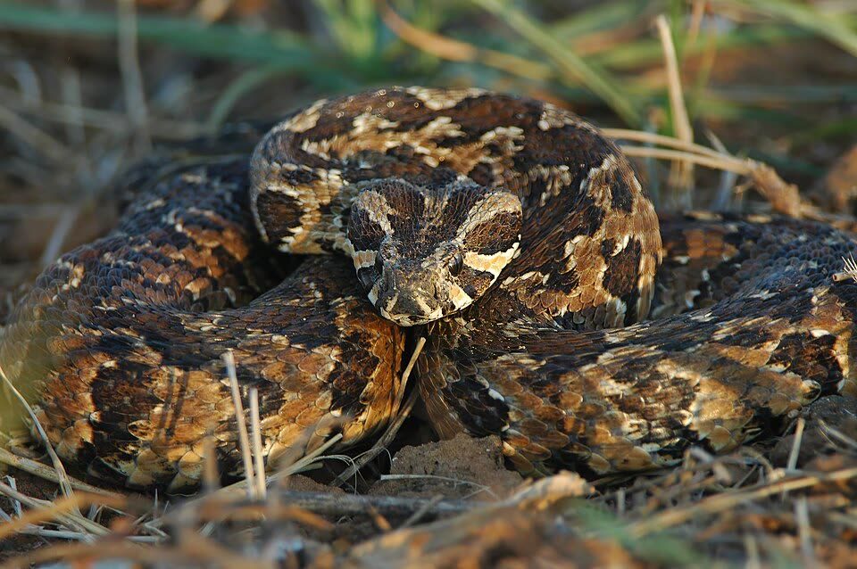
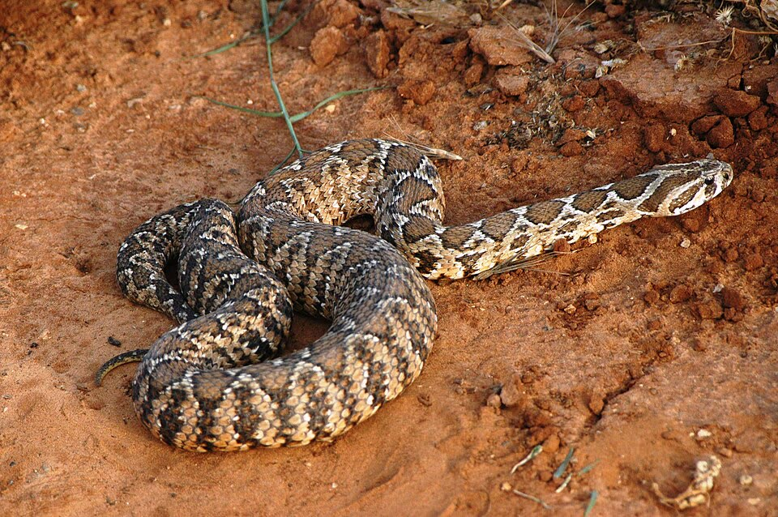
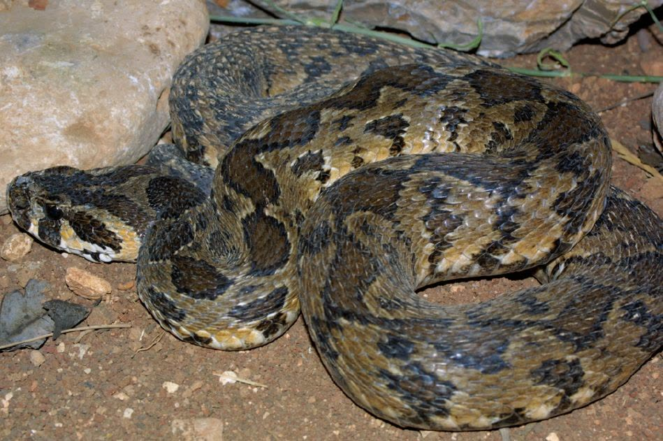
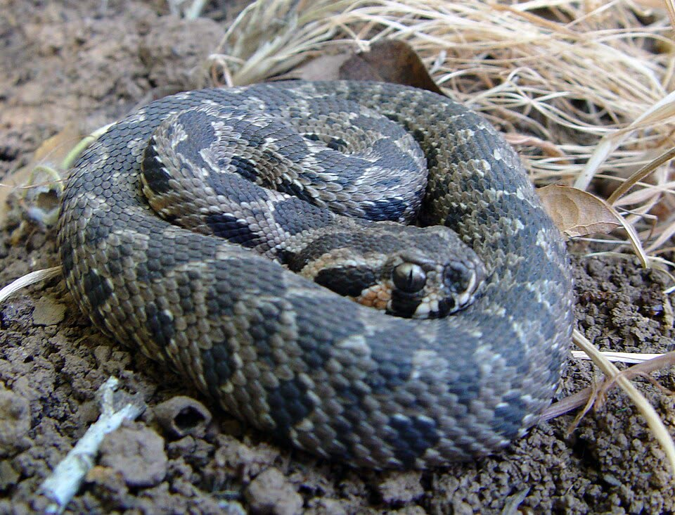
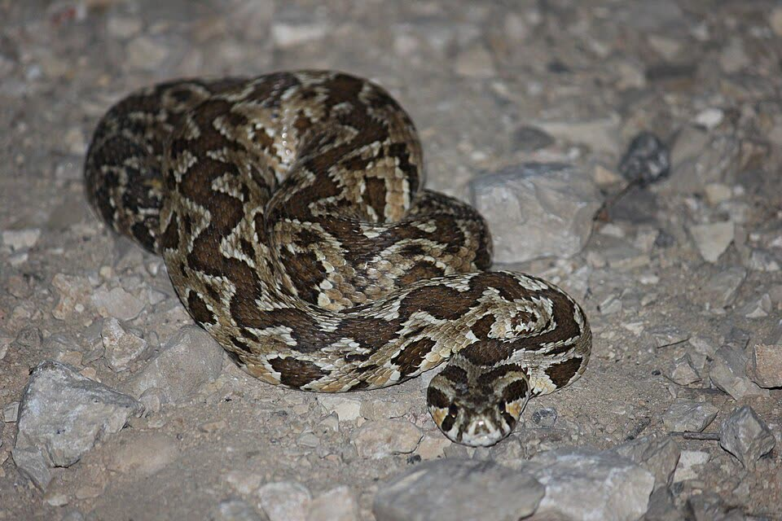
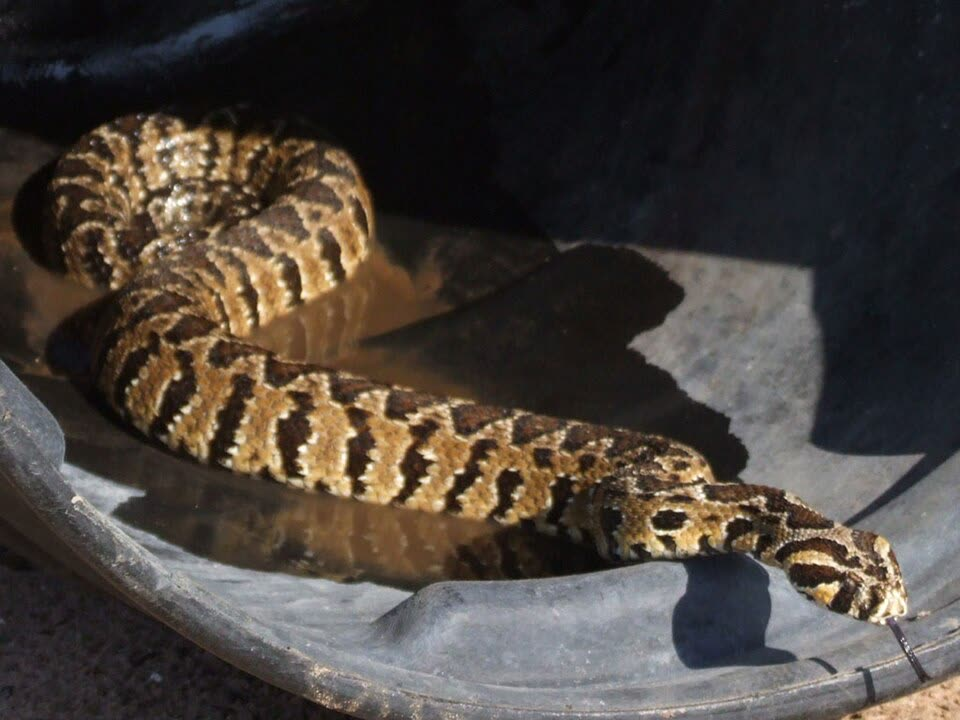
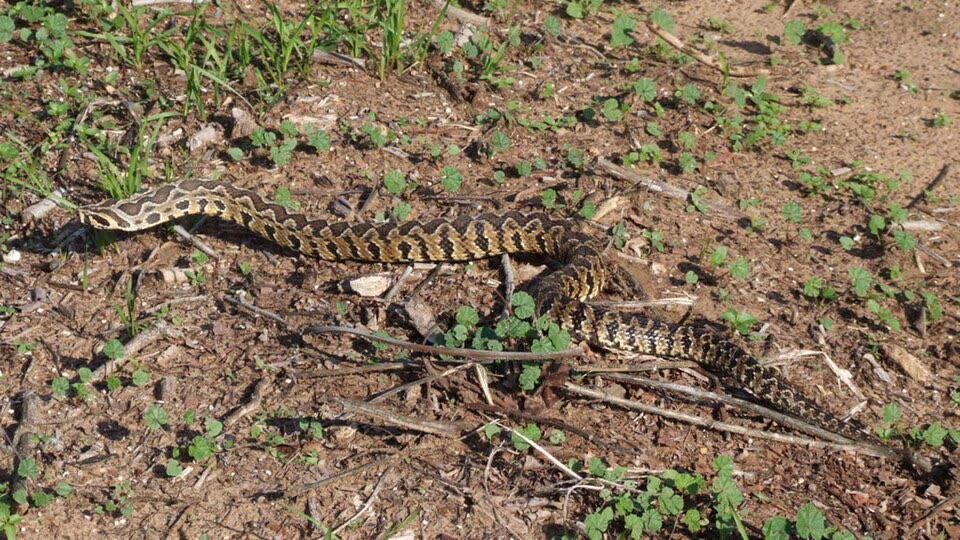
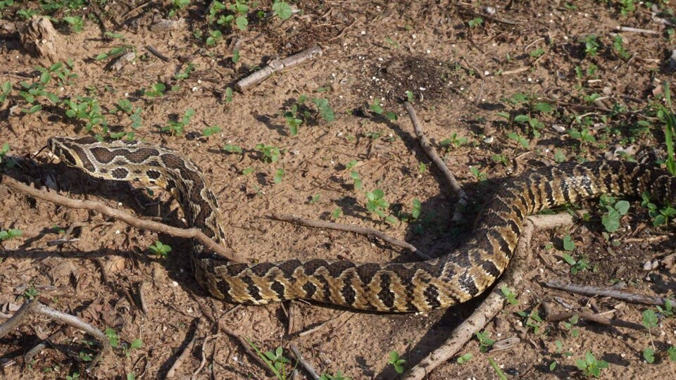
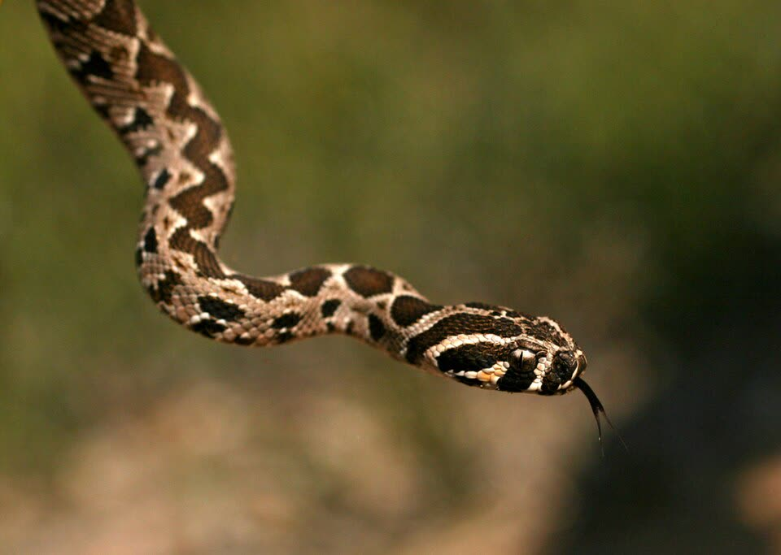
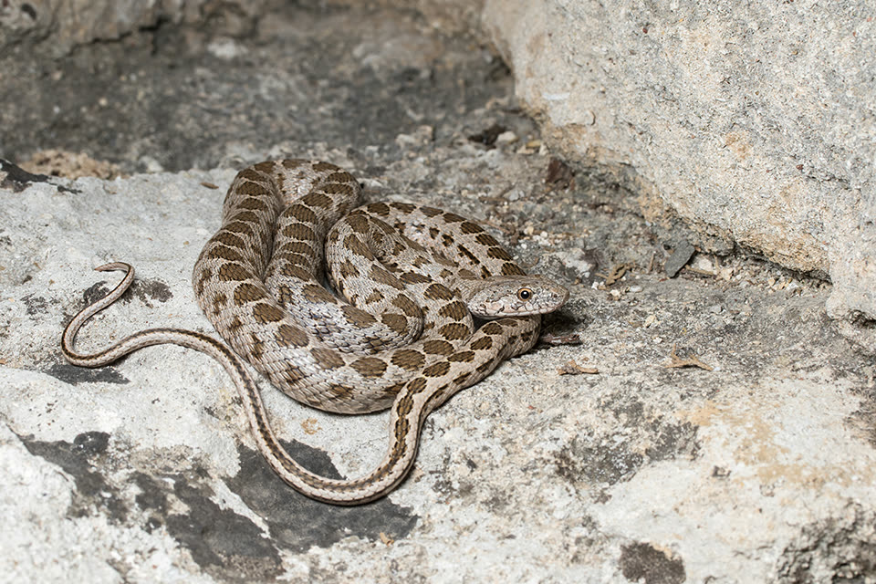
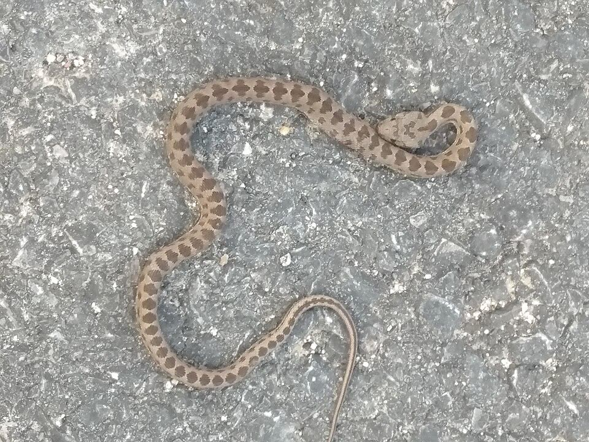
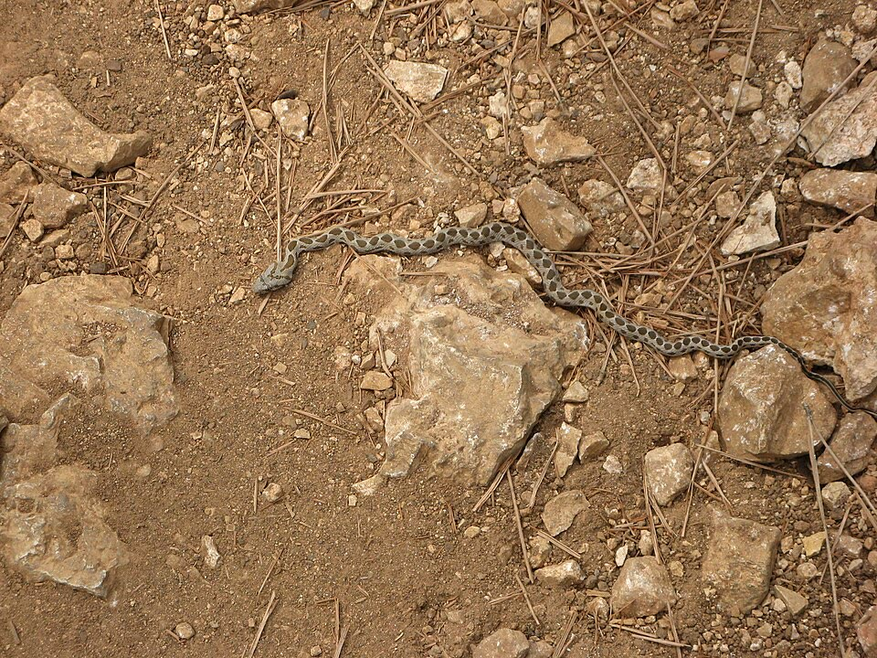
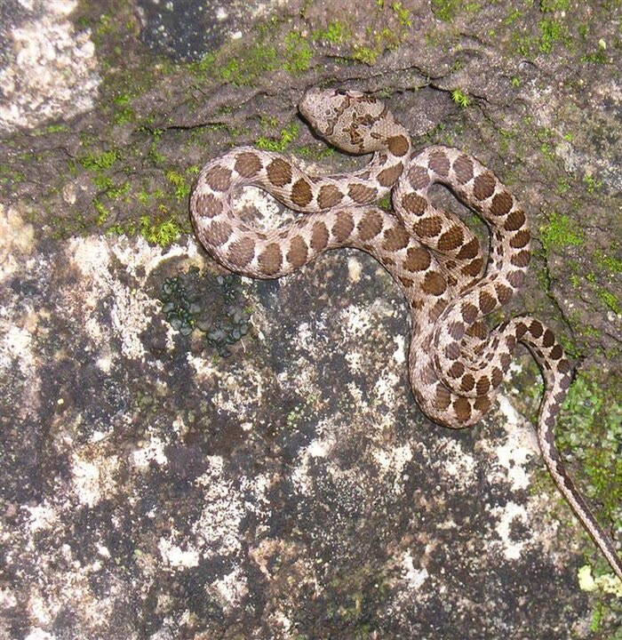
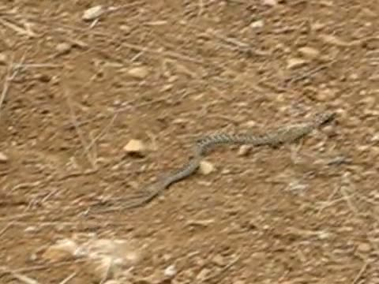
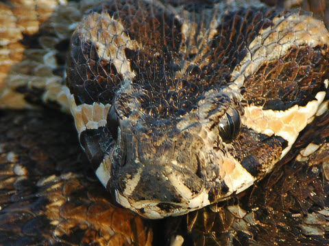
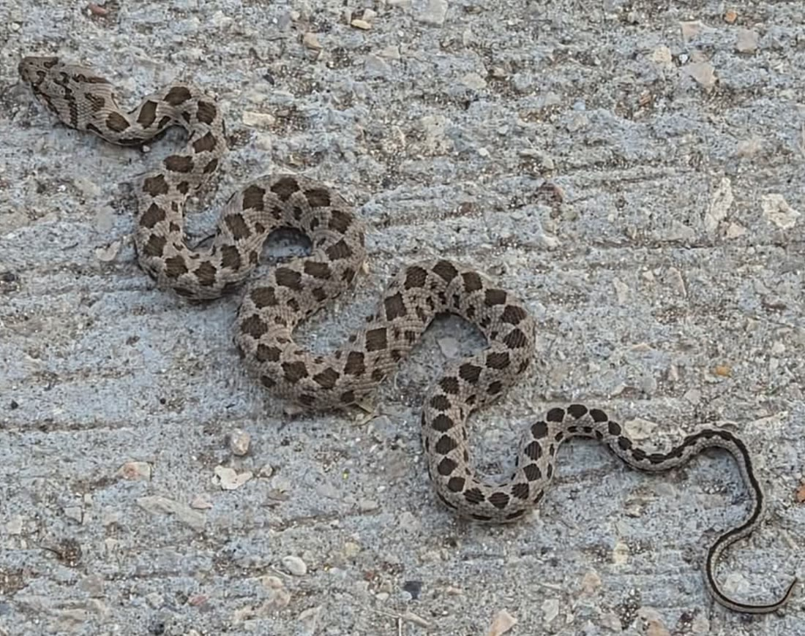